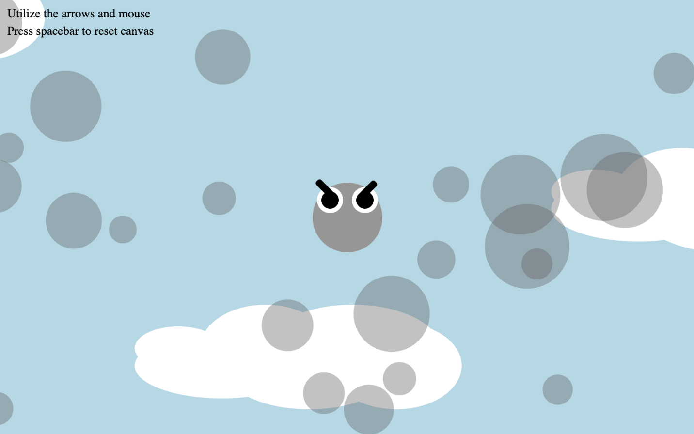
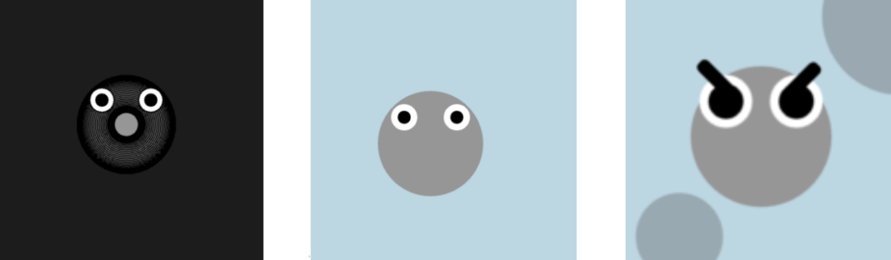
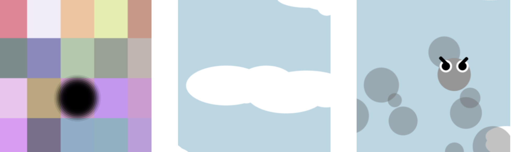

March 13, 2024
Meet Smogobo (Nickname: Smogo), it is an independent adorable yet harmful creature who leads a lonely yet fun life spreading pollution in the air clan. Wherever Smogo goes, Smogo leaves a dark trail, covering the blue cloud sky in the background. The more the user interacts with it, the more polluted Smogo and the environment become. Smogo draws the connection to the powerfulness of pollution and its toxicity to objects around it.
 P5 Sketch →Process: While conceptualizing this creature, I aimed to enhance its user-friendliness by infusing a more cartoonish aesthetic. Previously, I experimented with a non-cartoon approach, featuring a more substantial tail. This exploration involved experimenting with removing background and fill elements from my creature. While this departure from a cartoon-like style resulted in a less animated appearance, I disliked the metal springy aesthetic (as seen in sketch two). In terms of color selection, I sought to establish a distinct contrast between the creature and its habitat, opting predominantly for grayscale tones. Initially, a vibrant square background was employed (as seen in the first sketch), but subsequent user testing revealed a disconnect with the intended association with pollution. Consequently, I reimagined the habitat to better reflect the actual environment, ensuring a more cohesive visual narrative. Given Smogo's circular form and the desire for it to inhabit an aerial space rather than land, I chose to depict its environment using clouds, thereby capturing an airy atmosphere. This decision aligns with the circular shape of Smogo, as I believe that incorporating circular elements enhances the project's association with air, in contrast to the use of angular shapes like squares and rectangles. In the last sketch, which is the closest to my final project, I realized I lacked certain traits, such as a fiercer expression, and I needed to place the creature on top of the clouds to create the covering effect.
 For the character development, it changed from a metal springy creature, to a softer cartoon character, to a fiercer cartoon character which allowed me to relay the negativity of pollution to a younger audience. For the bakcground transformation, it went from a colorful energy-like background (inspired by digital age), to a cloud environment, and I finally added darker spots to create the pollution release.
Original Demo Video → First Rewrite Sketch Demo Video → Second Rewrite Sketch Demo Video →Peer Critique: For future development of this project, I could create a replica of the creature, one that's not as fierce and represents the energy-saving side. Depending on which creature covers more of the canvas, the creature will win. By doing so, I could make this a two-player game and explore another aspect of my topic by exploring the interaction between energy saving and pollution. Another tip is to make the cloud background gradually get darker or change color upon pollution progression. Plus, as I utilized the mouse to make the creature gradually get darker, I could also utilize the mouse to make the expression of the creature fiercer with each click. I'm grateful for all the tips I received, whether it's at the interaction day or demo day, as hearing from others not only allowed me to find missing points that I didn't previously think of but also let me find my path in the project more easily. Before the demo day, I had a lot of things I wanted to do in my project, however, after hearing advice from others, I was able to specify what I wanted from the project and narrow down my ideas, creating the current Smogo I also enjoyed that users liked Smogo and thought my ending project's message was clear.
Demo Video →Interactions: To shape the physique and locomotion of Smogo, I found inspiration in the well-known Google Snake game, also known as 贪吃蛇. By leveraging this familiar gaming reference, I aimed to create a user-friendly interface, simplifying directional controls for seamless interaction. Drawing on skills acquired from previous mini projects, I seamlessly integrated key and mouse interactions into my design. In the user interface, participants navigate Smogo across the canvas using the intuitive up, down, left, and right arrows. This allows users to disperse pollution within the habitat, altering its coloration from a vibrant blue to reflect the environmental impact of the creature's movements. There are three main interactions: using the arrow keys to move Smogo, clicking Smogo to apply pressure, and pressing the Spacebar to clear the canvas.
There were challenges in technical coding and the creative process, which was the hardest hurdle in the process for me. In the user testing, I realized that I needed to let the user know to focus more on the interaction rather than connecting it to a game concept. Rather than delving into gaming conventions, I sought to steer clear of veering off the project's original trajectory. I intended to direct attention toward the development of the creature and the symbiotic relationship between its actions and the environment. This strategic shift ensured a focus on drawing meaningful connections rather than engaging users solely in a competitive framework, fostering a deeper understanding of the environmental implications of their interactions.
When coding, I encountered challenges such as frequent typos and misplacement of curly braces {}. Additionally, I struggled with the correct arrangement of push and pop functions, hindering the isolation of specific code segments from affecting the entire canvas. To overcome these challenges, I relied on references to identify and implement the appropriate functions for achieving the desired movement. Some things I learned to utilize were && which combines two or more boolean expressions, and only if both conditions are true, will the creature move. I utilized my creature's tail which combined the arrow and the y position to keep my creature inside the canvas boundary. Through exploration, I also learned to replace certain variables of other parts of my creature to influence other variables of my code. For example, I utilized the x and y coordinates of my creature to move my eyes and eyebrows.
This project provided me with a canvas for unleashing my creativity, and translating my conceptual ideas into a tangible reality through the medium of code. From the beginning we learned a more 2D style that utilized shapes, however as we incorporated more movement and interactions, I realized another way coding can differ from pencil and paper. Throughout the creation process, I drew connections to experiences outside of my class. Whenever I played virtual games using my mouse and keys, I wondered if I could recreate the game in p5 using the skills I learned. Learning to code for this endeavor introduced me to a fresh and invigorating experience, reminiscent of the organic, tactile feeling of working with pencil and paper. Witnessing the expansive possibilities and the depth of creativity achievable through coding was a novel yet fun experience.